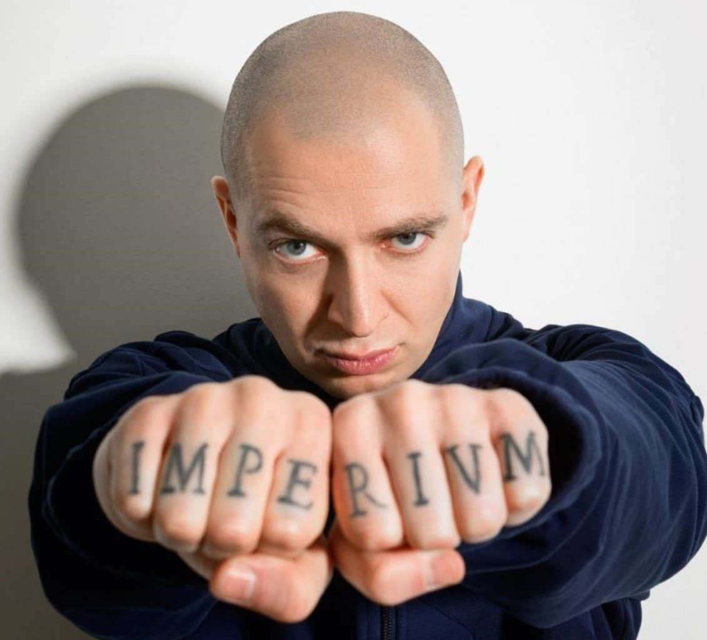

Oxxxymiron (Оксимиро́н; настоящее имя — Миро́н Я́нович Фёдоров; род. 31 января 1985, Ленинград, СССР) — российский хип-хоп-исполнитель и общественный деятель. Является одним из наиболее коммерчески успешных рэп-исполнителей России, его альбомы «Вечный жид» (2011) и, особенно, «Горгород» (2015) внесли значительный вклад в историю русского рэпа. Творчество исполнителя ряд исследователей и критиков относят к «интеллектуальному рэпу». Мирон Янович Фёдоров родился 31 января 1985 года в Ленинграде в еврейской семье. Его отец — Ян Валерьевич Фёдоров, физик-теоретик, в 1994 году защитил в Петербургском институте ядерной физики имени Б. П. Константинова докторскую диссертацию на тему «Статистические свойства собственных функций случайных одночастичных гамильтонианов». Мать — библиотекарь. Учился в санкт-петербургской школе № 185. Когда Мирону было 9 лет, его семья переехала в город Эссен (Северный Рейн-Вестфалия, Германия), и Мирон поступил в гимназию имени Марии Вехтлер (Maria-Wächtler-Gymnasiumrude). По его словам, у него были напряжённые отношения с немецкими одноклассниками; эта тема позже нашла отражение в его ранней песне «Последний звонок». Первые попытки читать рэп Мирон предпринял в возрасте 13 лет под псевдонимом Миф (сокращение от Мирон Фёдоров). После одной из поездок на родину в 14 лет уверенность Мирона в том, что он родоначальник рэпа на русском языке, пропала. Когда Мирону было 15 лет, его семья переселилась в город Слау (Беркшир, Великобритания), и здесь, больше не имея проблем с одноклассниками, он усиленно взялся за учёбу. Вскоре английская учительница истории — выпускница Оксфордского университета — предложила ему попробовать поступить в Оксфорд после окончания школы. В 2004 году, подав документы и пройдя собеседование, Мирон поступил в университет на факультет английского языка и литературы. В 2006 году получил диагноз «маниакально-депрессивный психоз» и был исключён по этой причине из вуза, но поступил повторно. В июне 2008 года получил диплом Оксфорда по специальности «средневековая английская литература». После учёбы в Оксфорде Мирон переехал жить в Ист-Энд и начал поиски работы. Из-за «чрезмерной квалификации» он не смог найти работу по профессии. Как утверждает рэпер, он «работал кассиром, переводчиком, грузчиком, гидом, ларёчником, репетитором, конферансье, офисным планктоном и консультантом с копытом». Новый круг общения, состоявший из русскоязычных эмигрантов, подтолкнул Мирона вернуться к хип-хопу. Он стал заниматься музыкой под псевдонимом «Oxxxymiron», появившимся как сочетание имени с литературным термином «оксюморон» (англ. oxymoron) и утроенной —X", отсылающей к большому количеству нецензурной лексики в его песнях. С 2013 года живёт в Санкт-Петербурге. В 2015 году был выпущен сериал «Лондонград», созданный во главе со сценаристом Михаилом Идовым на основе приключений Мирона в Лондоне. 